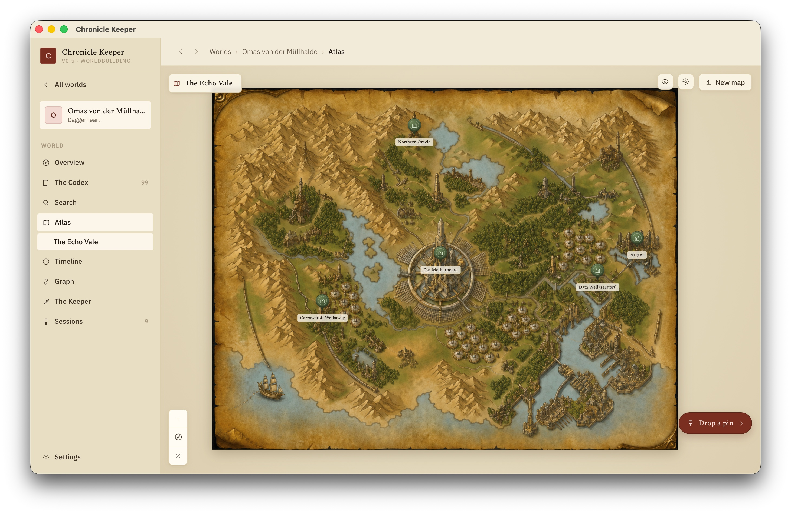
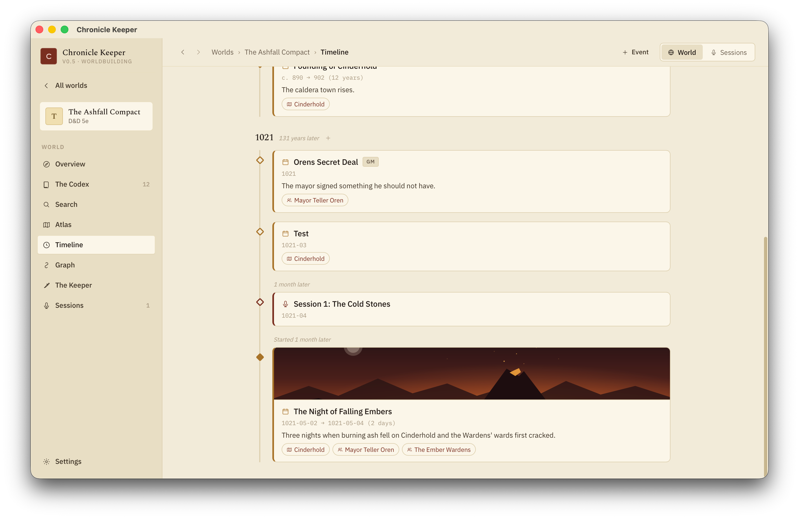
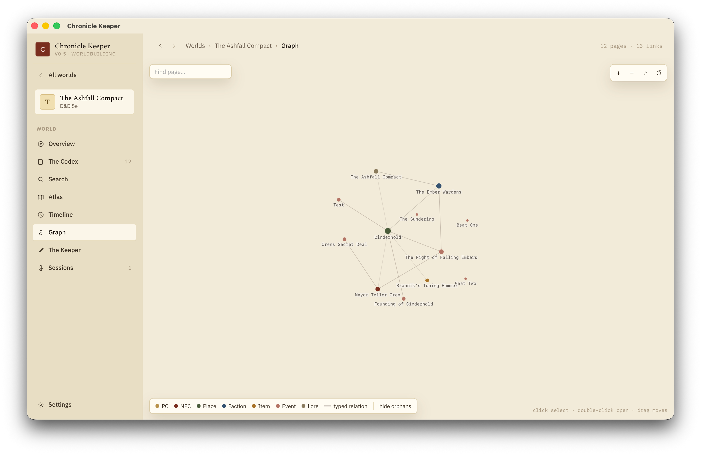

Maps, timeline & graph
Your pages are the source of truth; these are four lenses onto them. Pin a city on a map, plot an event on the calendar, watch the web of relationships, or query it like a database — nothing duplicated, all live.
The Atlas
Upload a map image and pan / zoom around it. Drop a pin anywhere and it mints (or links to) a codex page — each pin wears a wax-seal glyph for its kind. Hover a pin for a preview, click it to read the page in a side panel. Maps nest: descend from the continent to a region to a single city with a breadcrumb trail back up.
Any page that's pinned shows an "On the map" card in its right rail — click it to jump to the Atlas with that pin already open. The map and the wiki stay in sync because the pin is the page.

Timeline & calendar
Give a page a date: and it plots on the world timeline. The dedicated event kind adds date, location and participants. Dates are written as year[-month[-day]] [ERA] and sort correctly — including negative years, era-only dates, and ~ / c. for "circa".
Worlds rarely run on the Gregorian calendar, so you define your own in .ck/config.toml:
[calendar]
months = ["Hammer", "Alturiak", "Ches", "Tarsakh", "…"]
eras = ["BR", "DR"]Then 1374-02-12 DR renders as 12 Alturiak 1374 DR. More ways to place things on the line:
- Spans — add
end_date:(oruntil:) for a duration bar; the card shows the length, e.g.c. 890 → 902 (12 years). - No calendar? Use
order:(orseq:) integers to sort events relatively. - GM-only —
gm_only: truebadges an event and hides it behind a toggle. - Banner art — an
image:on any page becomes a card banner on the timeline and a full-bleed hero atop the page.
The rail groups by era and year with navigable participant and location chips, and filters by kind, tag, folder or entity. Sessions plot on their own lane and can join the world timeline by giving the session a world_date. The design intent: thin dated event pages wikilink to the entities involved — the entity pages keep the lore.

The graph
The graph view draws your whole world as a force-directed canvas — nodes coloured by kind, sized by how connected they are, with typed edges drawn distinctly. It's the fastest way to spot an orphaned page or see which faction sits at the centre of everything. Every page also gets a 1-hop local graph card showing its immediate neighbours.

Typed relations
A wikilink in frontmatter becomes a typed relationship — the field name is the relationship:
---
kind: npc
location: "[[Ashfall]]"
member_of: ["[[The Ashen Hand]]", "[[Smiths' Guild]]"]
---Ashfall's page then shows Bram under an incoming location relation. Rename a page and these values are rewritten too.
Queries
Build living lists with a ck-query code block — a small, read-only, dataview-style language evaluated live:
```ck-query
LIST FROM #ashfall AND kind:npc
WHERE location = [[Ashfall]] AND status != dead
```Supported clauses: FROM #tag / kind:x, and WHERE field = [[Page]], field != value, field contains value. Drop one on a region page for an always-current roster of its inhabitants.
You never maintain the map, the timeline or the graph separately. They're all computed from your pages' frontmatter and links — edit the page and every view updates.